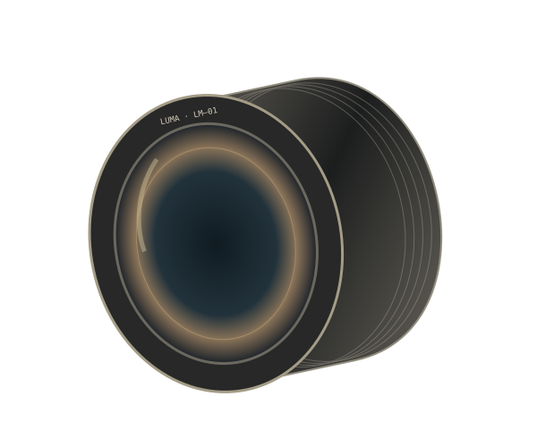

01 — AN INSTRUMENT FOR LOOKING
A closer kind
of attention.
A 35 mm lens concept.
For the things worth noticing.

MANUAL FOCUSAN INTENTIONAL GESTURE. 35 / 1.4
CONCEPT SERIES Nº 01
The scene is already there.
What you notice is yours.
A little more room to look.
A FEW PARTS.
A VERY PARTICULAR PURPOSE.
Look beneath
the surface.
The object comes apart as you scroll.
Select a component to
examine its role.
The part you feel.
A knurled focus ring gives the hand a reference point. The housing holds the optical elements in relation to one another.
Illustrative mechanism; not a calibrated optical simulation.
03 — FIELD NOTES
Before you take a picture,
you have to see one.
LIGHT / DISTANCE / A MOMENT
The long shadow. The small figure.
The ordinary afternoon you
might have walked past.
NOT A PERFORMANCE CLAIM.
LUMA / LM–01
An object.
Your point of view.
Same form. A different presence.
Choose a finish and turn the
instrument.
- Object
- Manual-focus lens concept
- Designation
- LM–01 / 35 mm
- Finish
- Carbon / satin dark metal
- Availability
- Design study. Not for sale.
A local preview. No order or signup.